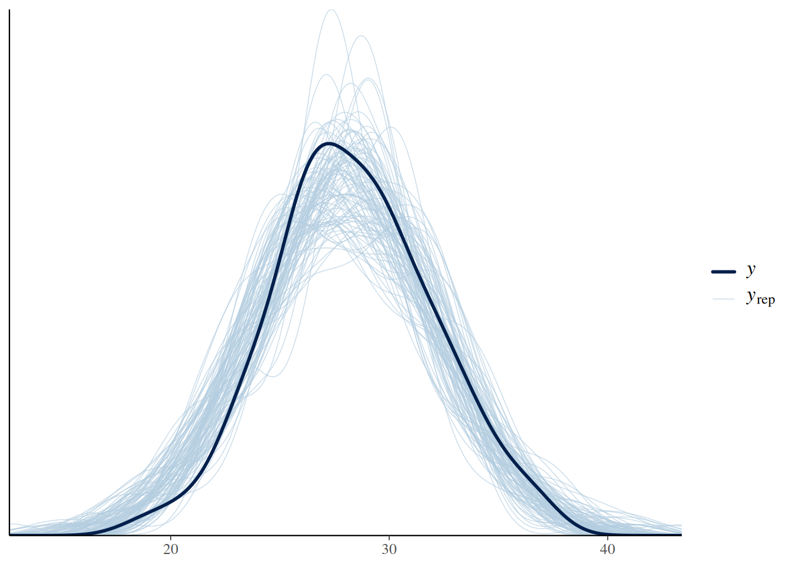
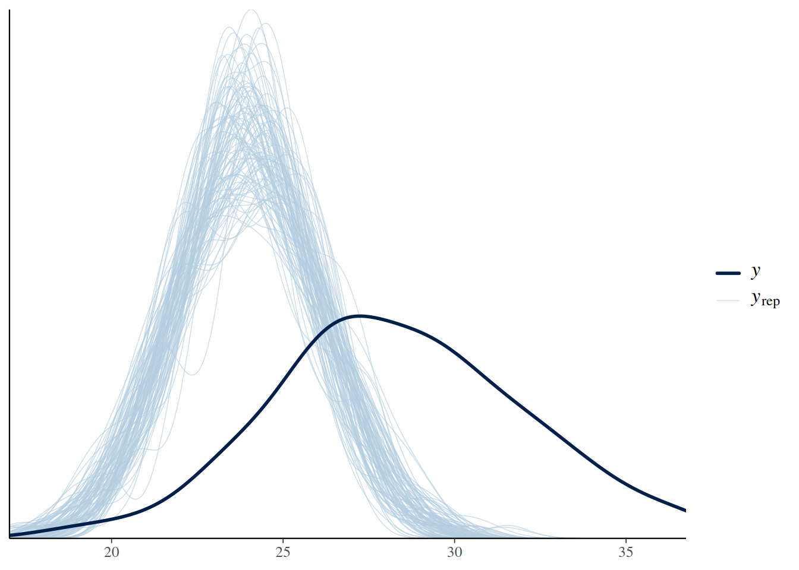
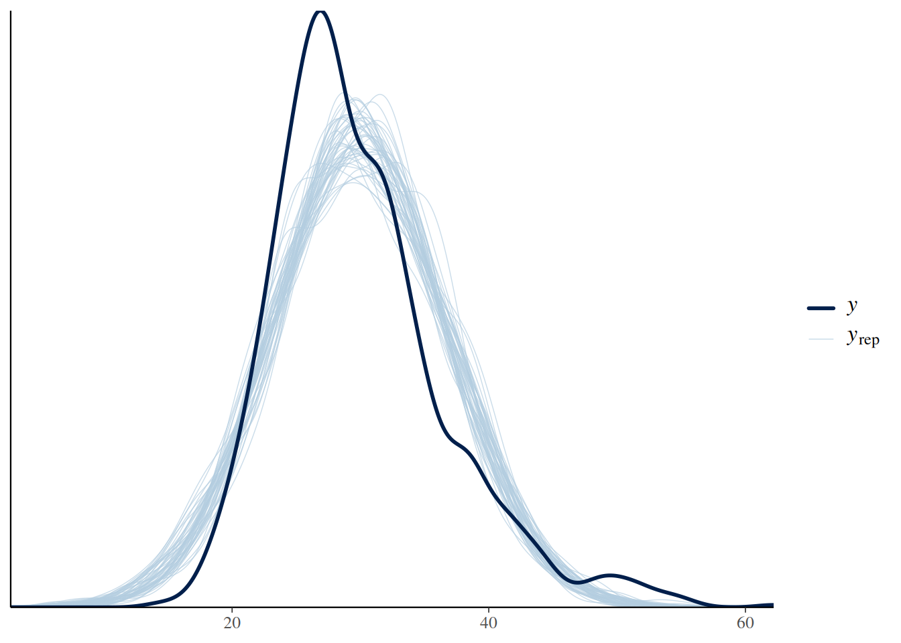
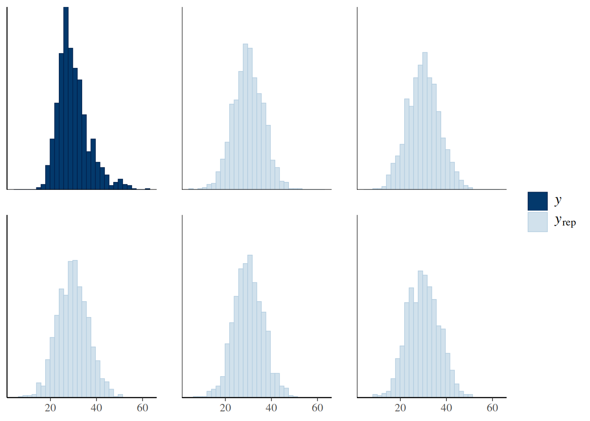
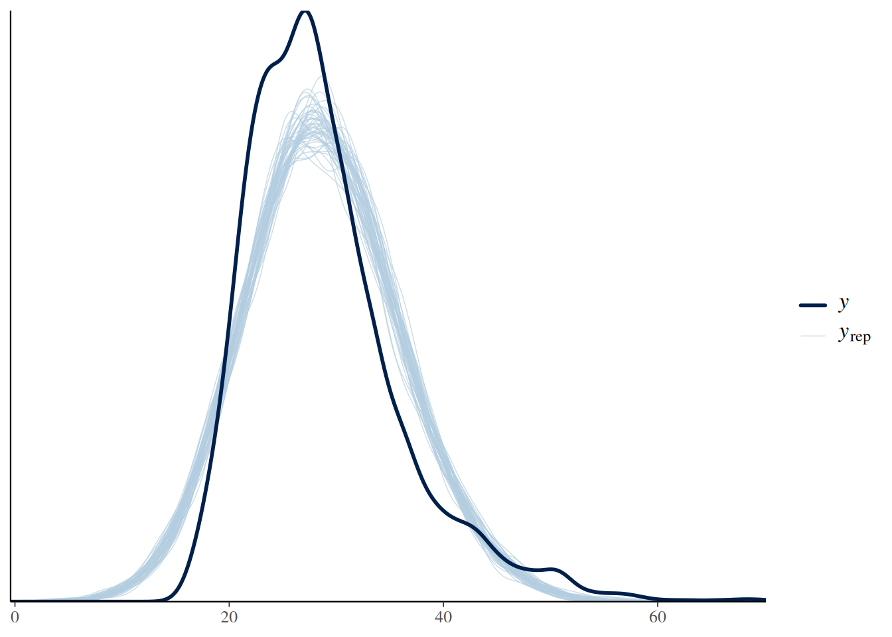
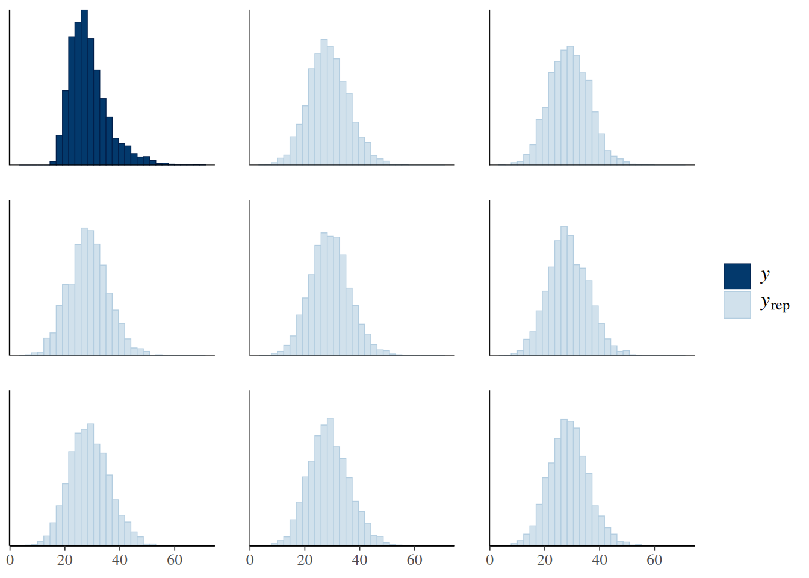
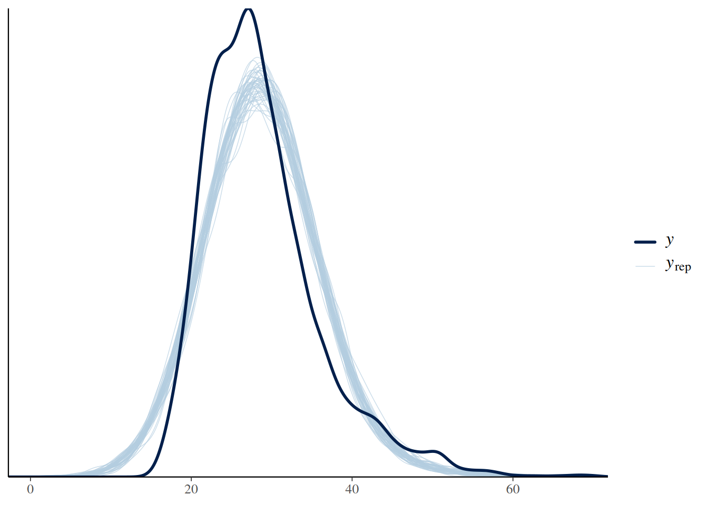
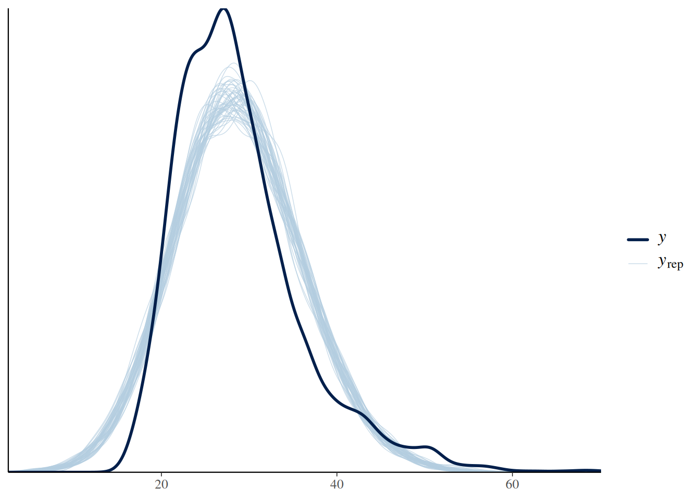
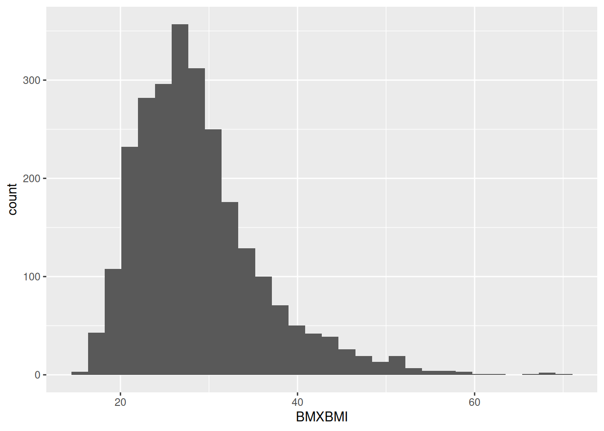

set.seed(123)
# Datos reales simulados
imc_real <- rnorm(100, mean = 28, sd = 4)
# Modelo (supuesto): IMC ~ Normal(28, 4)
# Generamos datos simulados desde el modelo
imc_sim <- replicate(100, rnorm(100, mean = 28, sd = 4))14.- Chequeo del Modelo
1. Intuición (SIN código)
Hasta ahora has aprendido a construir modelos bayesianos. Pero aquí viene una idea clave —y un poco incómoda:
👉 Construir un modelo no significa que sea correcto
Un modelo puede:
- ajustarse bien a los datos
- darte resultados “bonitos”
- parecer clínicamente razonable
…y aun así estar equivocado.
Analogía clínica
Piensa en una prueba diagnóstica nueva.
No basta con que:
- tenga buena teoría
- esté bien diseñada
- suene convincente
👉 Debe funcionar en pacientes reales
Con los modelos pasa exactamente lo mismo.
Entonces… ¿qué significa que un modelo “funcione bien”?
Un modelo es razonable si:
👉 puede reproducir datos similares a los que observamos en la realidad
Es decir:
- si el modelo genera pacientes “simulados”
- esos pacientes deberían parecerse a los reales
La idea central: posterior predictive checks
El modelo bayesiano tiene una propiedad muy poderosa:
👉 Puede generar datos nuevos
A partir del modelo, podemos simular:
- nuevos valores de IMC
- nuevos valores de glicemia
- nuevos pacientes
Entonces hacemos algo muy simple:
👉 Comparamos:
- datos reales vs
- datos simulados por el modelo
Traducción clínica
La pregunta clave es:
👉 ¿El modelo realmente representa la realidad clínica?
⚠️ Idea crítica
Un modelo puede:
- estimar bien los coeficientes
- tener intervalos razonables
👉 y aun así fallar en reproducir la realidad
Mensaje clave
👉 “Si el modelo no puede generar datos como los reales, no debes confiar en él”
2. Ejemplo simple (simulación en R)
Vamos a entender la idea con un ejemplo sencillo.
Supongamos que modelamos el IMC como una distribución normal.
Comparación visual
# Comparar visualmente el modelos con los datos reales
ppc_dens_overlay(y = imc_real, yrep = imc_sim)
¿Qué estamos viendo?
- Línea oscura → datos reales
- Líneas celestes → datos simulados por el modelo
Interpretación
Si el modelo es razonable:
- las curvas deberían parecerse
Si no:
- el modelo está fallando
Ejemplo de mal modelo
# Modelo incorrecto
imc_sim_mal <- replicate(100, rnorm(100, mean = 24, sd = 2))
# Comparar visualmente el modelos con los datos reales.
ppc_dens_overlay(y = imc_real, yrep = imc_sim_mal)
Se observa claramente que los datos simulados por el modelo generan un gráfico muy diferente al gráfico generado por los datos reales
Lección
👉 No basta con ajustar un modelo
👉 Hay que verificar si genera datos plausibles
3. Ejemplo aplicado con NHANES y aspirina
Ahora llevamos esta idea a datos reales.
Preparación
# Seleccionar las variables que voy a usar
datos <- df_obesidad %>%
select(BMXBMI, RXD530, RIDAGEYR, PAD680) %>%
drop_na()
# Filtrar los pacientes con por imc, dosis habitual de aspirina, edad,
# y minutos diarios de actividad sedentaria
datos <- datos %>%
filter(
BMXBMI <= 100,
RXD530 <= 500,
RIDAGEYR <= 100,
PAD680 < 2000
)Modelo base
# Crear modelo base
modelo <- stan_glm(
BMXBMI ~ RXD530 + RIDAGEYR + PAD680,
data = datos,
family = gaussian(),
chains = 2,
iter = 1000,
refresh = 0
)Generar datos simulados
# Generar datos simulados
yrep <- posterior_predict(modelo)👉 yrep contiene:
- muchas versiones simuladas del IMC
- cada fila = un mundo posible
Chequeo visual
# Chequeo visual
ppc_dens_overlay(
y = datos$BMXBMI,
yrep = yrep[1:50, ]
)
¿Qué debes observar?
Hazte estas preguntas:
1. ¿La distribución es similar?
- ¿El modelo captura la forma general del IMC?
- ¿La curva es parecida?
2. ¿La variabilidad es realista?
- ¿los datos simulados son muy “estrechos”?
- ¿o demasiado dispersos?
3. ¿Los extremos son plausibles?
- ¿el modelo genera IMC muy bajos o muy altos irreales?
- ¿faltan valores extremos?
Alternativa: histograma
# Alternativa al histograma
ppc_hist(
y = datos$BMXBMI,
yrep = yrep[1:5, ]
)
4. Ejemplo aplicado con NHANES e insulina
Ahora llevamos esta idea a datos reales.
Preparación
# Seleccionar las variables que voy a usar
datos <- df_obesidad %>%
select(BMXBMI, LBXIN, RIDAGEYR, PAD680) %>%
drop_na()
# Filtrar los pacientes con por imc, dosis habitual de aspirina, edad,
# y minutos diarios de actividad sedentaria
datos <- datos %>%
filter(
BMXBMI <= 100,
LBXIN <= 100,
RIDAGEYR <= 100,
PAD680 < 2000
)Modelo base
# Crear modelo base
modelo <- stan_glm(
BMXBMI ~ LBXIN + I(LBXIN^2) + RIDAGEYR + PAD680,
data = datos,
family = gaussian(),
chains = 2,
iter = 1000,
refresh = 0
)Generar datos simulados
# Generar datos simulados
yrep <- posterior_predict(modelo)👉 yrep contiene:
- muchas versiones simuladas del IMC
- cada fila = un mundo posible
Chequeo visual
# Chequeo visual
ppc_dens_overlay(
y = datos$BMXBMI,
yrep = yrep[1:50, ]
)
Alternativa al histograma
# Alternativa con el histograma
ppc_hist(
y = datos$BMXBMI,
yrep = yrep[1:8, ]
)
5. Interpretación clínica
Aquí es donde todo cobra sentido.
Imagina este escenario
Tu modelo dice:
👉 “La aspirina se asocia con menor IMC”
Suena interesante.
Pero cuando haces el chequeo:
👉 el modelo:
- no reproduce la distribución real del IMC
- subestima la variabilidad
- ignora valores extremos
Problema
Entonces:
👉 el modelo no representa la realidad clínica
Consecuencia
Aunque los coeficientes sean “bonitos”:
👉 no puedes confiar en el modelo
Interpretación práctica
Un buen modelo debería:
- reproducir la variabilidad real del IMC
- generar pacientes plausibles
- capturar valores extremos razonables
Insight clave
👉 Un modelo puede estar “bien estimado”…
👉 …pero ser clínicamente inútil
Cambio de mentalidad
Antes:
- “El modelo converge → está bien”
Ahora:
- “¿El modelo reproduce la realidad?”
Mensaje final del capítulo
👉 El modelo no está para describir los datos…
👉 Está para generar una realidad creíble
Y si no puede hacerlo:
👉 no debes confiar en él
Lo que viene después
En los siguientes capítulos aprenderás:
- cómo mejorar modelos que fallan
- cómo detectar problemas específicos
- cómo ajustar supuestos
Pero por ahora quédate con esto:
👉 Un buen analista bayesiano no solo construye modelos…
👉 también los cuestiona
Ejercicios
Ejercicio 1 — Detectar el problema
Toma tu modelo actual.
👉 Pregunta:
- ¿La media está bien?
- ¿La dispersión está bien?
- ¿Las colas están bien?
👉 Escribe 3 frases clínicas, por ejemplo:
“El modelo sobreestima el IMC promedio…”
Ejercicio 2 — Comparación de modelos
Construye dos modelos:
# Construir modelo 1
modelo1 <- stan_glm(
BMXBMI ~ LBXIN + RIDAGEYR,
data = datos,
family = gaussian(),
chains = 2,
iter = 1000,
refresh = 0
)# Construir modelo 2
modelo2 <- stan_glm(
BMXBMI ~ LBXIN + I(LBXIN^2) + RIDAGEYR,
data = datos,
family = gaussian(),
chains = 2,
iter = 1000,
refresh = 0
)👉 Genera yrep para ambos
yrep1 <- posterior_predict(modelo1)yrep2 <- posterior_predict(modelo2)👉 Haz PPC
ppc_dens_overlay(
y = datos$BMXBMI,
yrep = yrep1[1:50, ]
)
ppc_dens_overlay(
y = datos$BMXBMI,
yrep = yrep2[1:50, ]
)
Pregunta:
👉 ¿Cuál reproduce mejor:
la media? la forma?
Ejercicio 3 — Intuición sobre distribución
Sin cambiar el modelo:
👉 observa el histograma real de IMC
ggplot(datos, aes(x = BMXBMI)) +
geom_histogram(bins = 30)
Pregunta:
👉 ¿Es simétrico?
👉 ¿Tiene cola derecha?
Ejercicio 4 — Pensamiento clínico
Responde:
👉 ¿Por qué el IMC NO debería ser perfectamente normal en la vida real?
Pista:
- obesidad
- heterogeneidad
- estilos de vida
Ejercicio 5 — Nivel clave
Completa esta frase:
“Aunque el modelo no reproduce perfectamente la distribución, sigue siendo útil para ________, pero no para ________.”
Ejercicio 6 — Insight profundo
Responde:
👉 ¿Qué te enseñó el PPC sobre el modelo que no podrías ver solo con coeficientes?